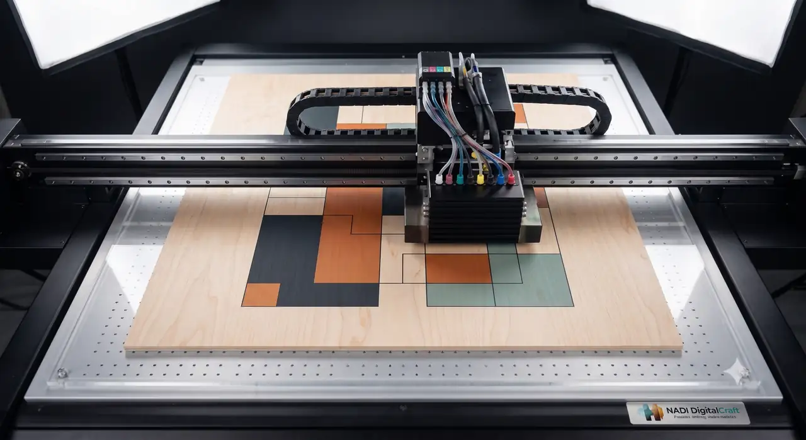
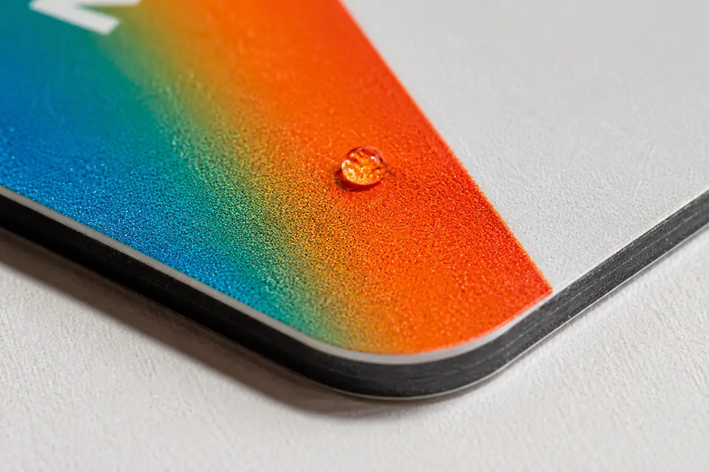

APPLICATION-LED PRODUCTION
Where print needs to live.
Explore applications by outcome. HDC determines the appropriate production route from the physical job, not from a generic catalogue claim.
APPLICATION ROUTING01–05
01Textiles & apparel
Transfer printing considered through fabric, artwork and intended application.
DTF ↗02Products & objectsHard-surface decorative applications, with material suitability reviewed first.
UV DTF ↗03Packaging & print matterCommercial sheet printing for packaging, stationery and branded communication.
Offset ↗04Events & personalisationApplication-led print for objects and event material where the surface is appropriate.
Validate ↗05Brand environmentsLarge-format print for displays, signs and physical spaces in confirmed scope.
Large format ↗MATERIAL-LED EXAMPLESNOT CLIENT CASE STUDIES

